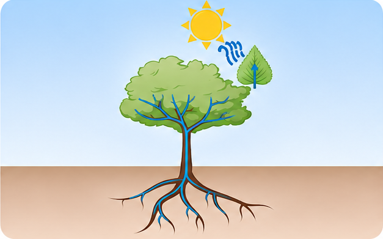
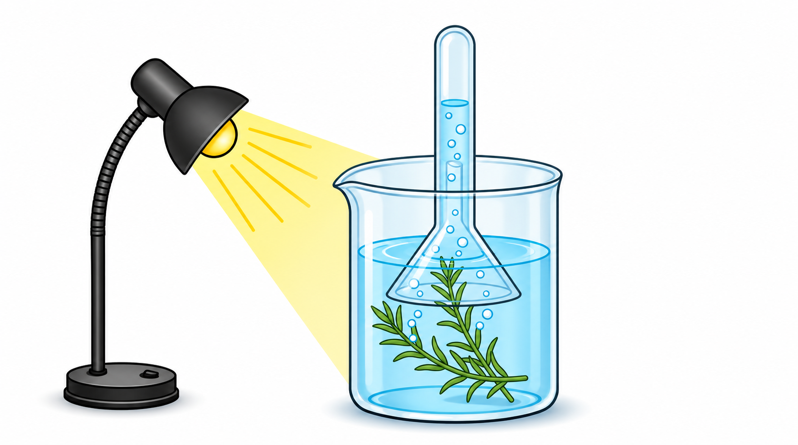
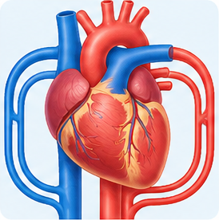

Pflanzenphysiologie
Wassertransport im Baum
Erforsche Wurzeldruck, Verdunstungssog, Kohäsion und Adhäsion in fünf interaktiven Stationen.
Interaktive Modelle zum Entdecken, Experimentieren und Verstehen.

Erforsche Wurzeldruck, Verdunstungssog, Kohäsion und Adhäsion in fünf interaktiven Stationen.

Experimentiere mit Licht, CO₂, Temperatur und Lichtfarbe. Zähle Sauerstoffbläschen und untersuche den Tag-Nacht-Wechsel.

Untersuche, wie Sauerstoff und Kohlenstoffdioxid zwischen Lungenbläschen und Blut ausgetauscht werden.
Bild: Springer Nature

Entdecke, wie das Herz das Blut durch Lungen- und Körperkreislauf pumpt.